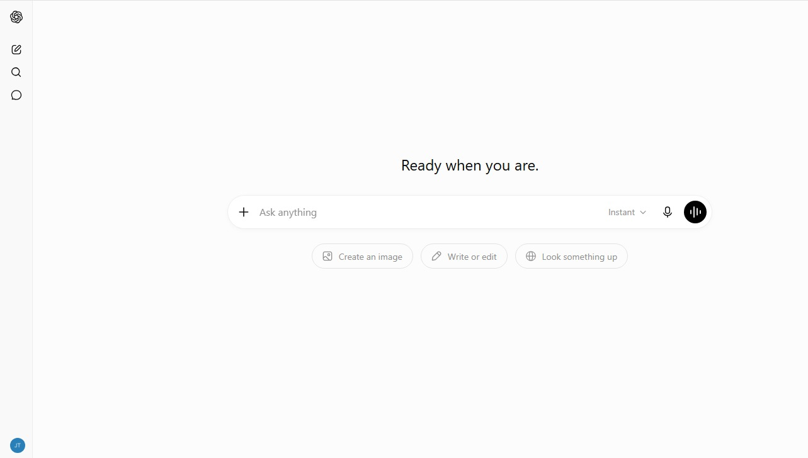
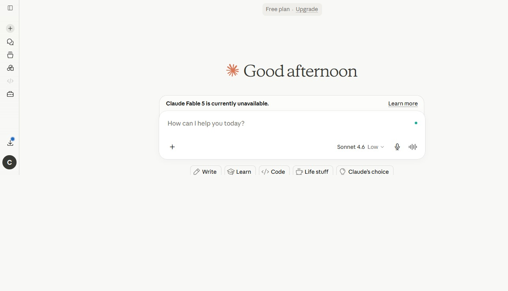
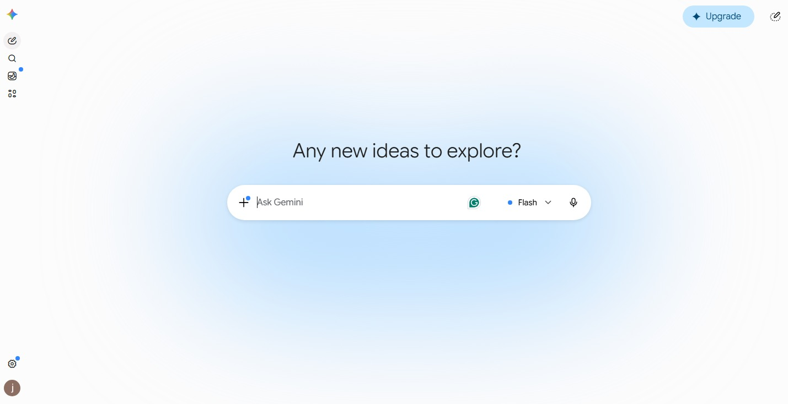
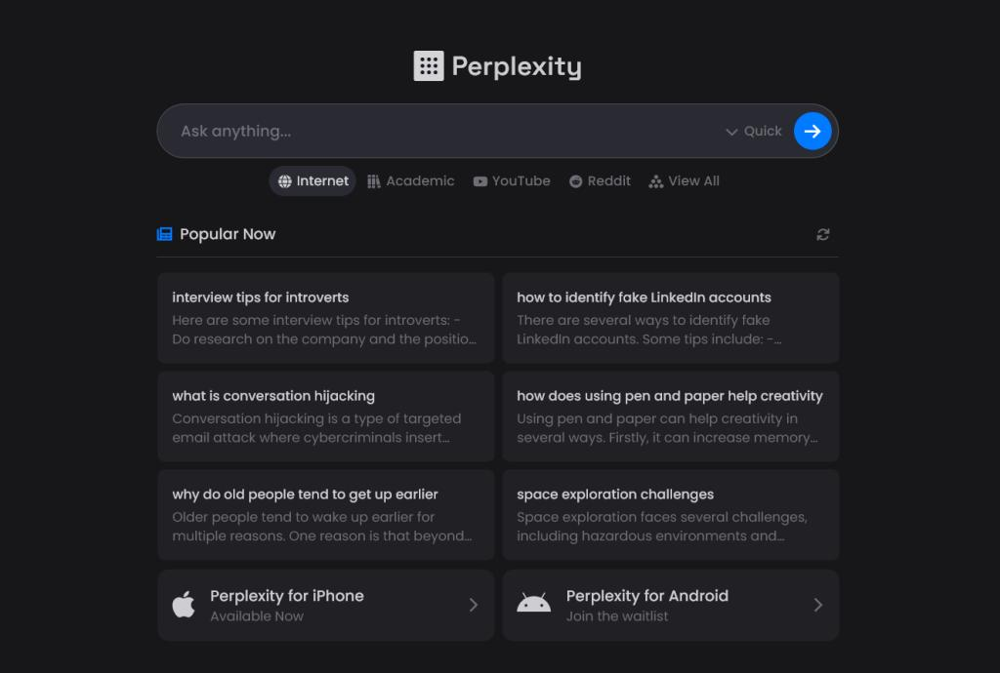
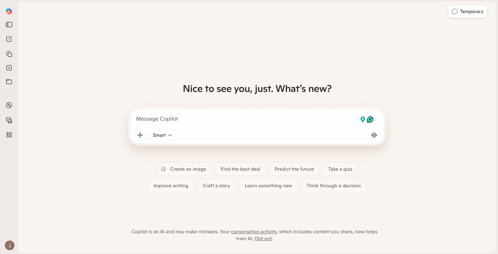

Best AI Tools in 2026
Expert Reviews & Comparisons
Explore the most powerful AI tools for writing, coding, image generation, video creation, business automation, productivity, and more.

In This Guide
#1 ChatGPT — by OpenAI
What is ChatGPT?
OpenAI's ChatGPT is an AI-powered conversational assistant trusted by millions worldwide. It is available on web, mobile, and desktop platforms — with both free and paid plans.
- Content writing
- Coding & debugging
- Research
- Learning new skills
- Business productivity
- Marketing copy
- Brainstorming ideas
- Data analysis

ChatGPT Interface"Our goal is to make AI that is safe, beneficial, and accessible to everyone — ChatGPT is our biggest step toward that mission."Sam Altman — CEO, OpenAI
Pros
- Very easy to use
- Excellent for content writing
- Strong coding & debugging support
- Fast, accurate responses
- Supports multiple languages
- Summarises long documents
- Free plan available
Cons
- Advanced features need paid plan
- Occasionally produces wrong info
- Real-time web access varies by plan
- Generic output without detailed prompts
- Not a substitute for professional advice
#2 Claude — by Anthropic
What is Claude?
Claude is Anthropic's safety-focused AI assistant known for handling extremely long documents and nuanced reasoning. It excels at thoughtful, balanced responses and is trusted by enterprises worldwide.
- Long document analysis
- Legal & contract review
- Research summarisation
- Creative writing
- Customer support
- Code generation
- Data extraction
- Safe AI interactions

Claude Interface"We want Claude to be genuinely helpful to the humans it works with, as well as to society at large, while avoiding actions that are unsafe or unethical."Dario Amodei — CEO, Anthropic
Pros
- Handles very long context windows
- Thoughtful, nuanced responses
- Strong safety & alignment focus
- Excellent for document summarisation
- Great for legal & academic tasks
- Free plan available
Cons
- Fewer integrations than ChatGPT
- Advanced models require paid plan
- No image generation built-in
- Can be overly cautious at times
- Smaller plugin/tool ecosystem
#3 Google Gemini — by Google
What is Google Gemini?
Google Gemini is Google's most capable multimodal AI, deeply integrated with Google Search, Gmail, Docs, Sheets, and the entire Google Workspace suite. It understands text, images, audio, and code.
- Google Workspace integration
- Multimodal understanding
- Real-time web search
- Image analysis
- Code generation
- Gmail drafting
- Data in Google Sheets
- YouTube summarisation

Google Gemini Interface"Gemini represents our most capable and general AI model, built from the ground up to be multimodal and to help people across everything they do with Google."Sundar Pichai — CEO, Google
Pros
- Deep Google Workspace integration
- Real-time web access built-in
- Excellent multimodal capabilities
- Free tier with generous limits
- Strong image & video understanding
- Fast and reliable responses
Cons
- Best features tied to Google ecosystem
- Advanced plan costs $19.99/mo
- Coding less refined than GPT-4o
- Occasional factual errors
- Privacy concerns with Google data
#4 Perplexity AI — by Perplexity
What is Perplexity AI?
Perplexity AI is an AI-powered search engine that provides direct, cited answers from the live web. It combines the depth of a research tool with the speed of a conversational assistant — perfect for fact-finding.
- Real-time web research
- Cited source answers
- Academic research
- News summarisation
- Competitive analysis
- Topic deep-dives
- Market research
- Fact verification

Perplexity AI Interface"We are building the world's best answer engine — one that gives you accurate, cited, real-time answers instead of a list of links to click through."Aravind Srinivas — CEO, Perplexity AI
Pros
- Always uses live, up-to-date sources
- Every answer comes with citations
- Ideal for academic & market research
- Clean, distraction-free interface
- Free plan with solid features
- Supports follow-up questions
Cons
- Less suited for creative writing
- Pro plan needed for best models
- No image or code generation
- Answers can be brief on complex topics
- Limited memory across sessions
#5 Microsoft Copilot — by Microsoft
What is Microsoft Copilot?
Microsoft Copilot is an AI assistant powered by GPT-4o and deeply embedded in Microsoft 365 — Word, Excel, PowerPoint, Outlook, and Teams. It transforms how professionals work with documents and data.
- Word document drafting
- Excel data analysis
- PowerPoint creation
- Outlook email drafting
- Teams meeting summaries
- Business automation
- Web browsing & search
- Code in GitHub Copilot

Microsoft Copilot Interface"Copilot is the most exciting new thing I've worked on in my entire career. It is a new paradigm for computing — a co-pilot for every person and every business."Satya Nadella — CEO, Microsoft
Pros
- Deep Microsoft 365 integration
- Powered by GPT-4o (best model)
- Automates Word, Excel, PowerPoint
- Teams meeting transcription & summaries
- Free version available via Bing
- GitHub Copilot for developers
Cons
- Full power requires Microsoft 365
- $20/mo for Copilot Pro
- Less useful outside Office apps
- Can feel limited vs. standalone ChatGPT
- Data privacy concerns in enterprise
AI Tools Comparison Table 2026
Quick side-by-side comparison of the top 5 AI tools.
| AI Tool | Best For | Free Plan | Starting Price | Rating | Visit |
|---|---|---|---|---|---|
| ChatGPT | Writing, Coding, Research | ✓ Yes | $20/mo | ⭐⭐⭐⭐⭐ 9.8/10 | Visit |
| Claude | Long Documents, Legal | ✓ Yes | $20/mo | ⭐⭐⭐⭐⭐ 9.7/10 | Visit |
| Google Gemini | Google Workspace | ✓ Yes | $19.99/mo | ⭐⭐⭐⭐⭐ 9.5/10 | Visit |
| Perplexity AI | Research & Search | ✓ Yes | $20/mo | ⭐⭐⭐⭐⭐ 9.4/10 | Visit |
| Microsoft Copilot | Office Productivity | ✓ Yes | $20/mo | ⭐⭐⭐⭐⭐ 9.3/10 | Visit |
Frequently Asked Questions
Common questions about the best AI tools in 2026.
WebToolOcean Editorial Team
Last updated:
The WebToolOcean team researches, tests, and reviews the best online tools and AI software to help developers, designers, and businesses work smarter. Learn more about us.